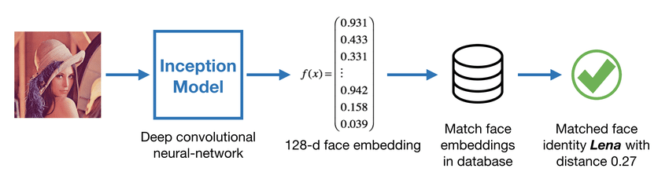

Scalable Face Match
I learned first-hand the scalability constraints of using neural nets in a real-time production environment. My task was to identify multiple single-shot detectors with a high recognition-rate, one for human faces and another for printed/handwritten-text. Next, I was required to select the one with the fastest response time. Then, all that was left for me to do was to write python classes that would interpretthe output from the trained network to produce either the eigen distance weighted average between the facial features identified by the neural net, or take it a step further and calculate a confidence score that more intuitively describes a face match accuracy. There are two separate API call methods for both of these.
